手册简介
这份手册面向第一次使用金智汇连 ETL 的新手用户。读完你可以：
- 独立完成「数据拉取 → 清洗转换 → 写入数据库」完整 ETL 流程
- 看懂每个页面的按钮都是干嘛的
- 遇到问题能自己排查，不用到处问人
5 分钟快速上手
完整 ETL 流程只要 4 步，照抄就能跑通：
这是数据写入的「目标」，你可以理解为一个新的数据库文件。
- 左侧导航 → 连接管理
- 点击 + 新建连接
- 类型选
DuckDB，路径填D:/data/my_first.db（目录不存在会自动创建） - 点 保存，再点 测试，看到绿色 ✅ 就对了
数据从哪来？这里选一个数据源，比如 TDX（通达信本地数据）或 AkShare（在线 A 股数据）。
- 左侧导航 → 数据源
- 点击 + 新建数据源
- 类型选
AkShare（最容易，无需本地数据） - 模板选
stock_zh_a_hist，股票代码填000001 - 点 测试 看是否能拉到数据
工作流定义数据怎么「加工」。新手直接用预制示例最快：
- 左侧导航 → ETL 工作流
- 点 📥 导入示例
- 勾选「示例1: 数据源拉取 → 写入 DuckDB」
- 点 导入选中
Pipeline 把「数据源 → 工作流 → 目标连接」串成完整流程：
- 左侧导航 → 数据流 (Pipeline)
- 点 + 新建数据流
- 选刚才的数据源、工作流、DuckDB 连接
- 点 预检查 → 预览 → 执行
看到 status: success，数据就落库了！🎉
核心概念（先搞懂这 5 个词）
整个系统围绕 5 个核心对象运转，理解它们的关系就理解了产品：
| 对象 | 一句话解释 | 类比 |
|---|---|---|
| 连接 (Connection) | 数据写入的目标，定义「写到哪个数据库/文件」 | 仓库地址 |
| 数据源 (Source) | 数据读取的来源，定义「从哪拉数据」 | 供应商 |
| 工作流 (Workflow) | 一组加工节点的编排，定义「数据怎么变换」 | 加工流水线 |
| 数据流 (Pipeline) | 把 Source + Workflow + Connection 绑在一起的一次完整任务 | 生产订单 |
| 凭证 (Credential) | API Key / Token 等敏感信息，安全存储 | 钥匙 |
启动应用
在项目根目录找到 start.bat，双击运行：
├── start.bat ← 双击这个！
├── backend/
├── frontend/
└── docs/首次运行会自动创建虚拟环境 + 安装依赖，大概 1~3 分钟。后续启动只要 10 秒左右。
启动成功后：
- 命令行会显示
Uvicorn running on http://127.0.0.1:8080 - 浏览器会自动打开 Dashboard
浏览器访问 http://127.0.0.1:8080，看到总览页面就是启动成功：
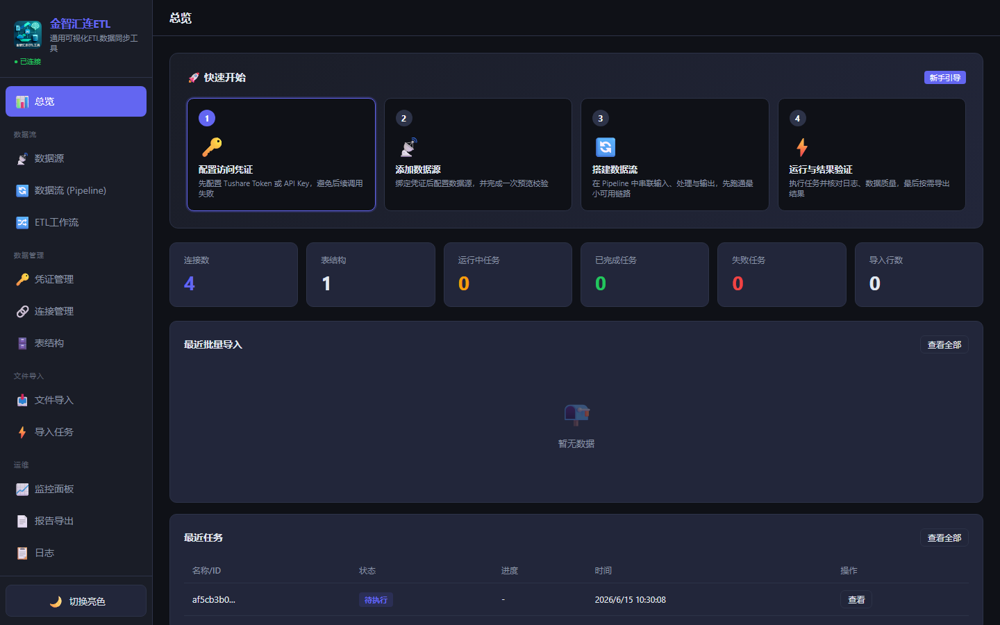
A: 在项目根目录
Shift + 右键 → 「在此处打开 PowerShell」→ 运行 .\start.bat，这样能看到报错信息。
A: 等命令行完全启动（看到
Application startup complete）再访问；同时检查 8080 端口是否被其他程序占用（如 Skype、其他 web 服务）。
创建连接（数据写入的目标）
连接定义了「数据要写到哪」。最常用的目标：DuckDB（轻量本地数据库，推荐新手）和 SQLite。
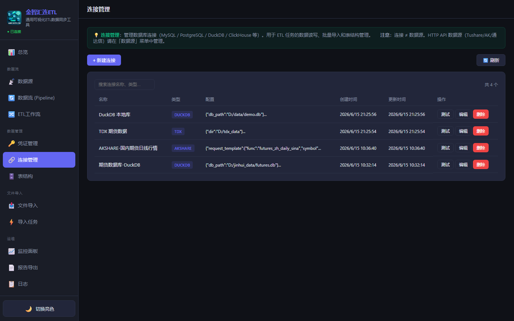
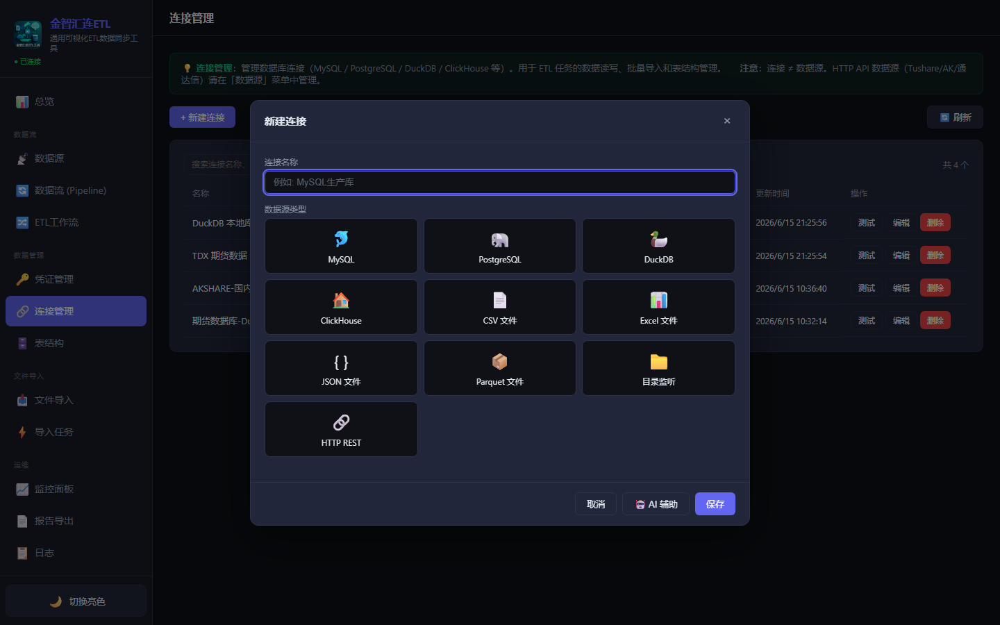
| 字段 | 填写 | 说明 |
|---|---|---|
| 名称 | 如 本地DuckDB | 随便起，自己能认出来就行 |
| 类型 | DuckDB | 新手强烈推荐 DuckDB，无需安装 |
| 数据库路径 | D:/data/my_etl.db | 目录不存在会自动创建；注意 Windows 用正斜杠 / |
保存后，在列表里点 测试 按钮。看到绿色的 ✅ 已连接 DuckDB 就完成了。
D:/data/ 下方便管理。
❓ 测试连接失败怎么办？
常见原因：
- 路径写错：Windows 路径用正斜杠
D:/data/xxx.db，或双反斜杠D:\\data\\xxx.db - 目录无权限：别写到
C:\Program Files这种受保护目录 - DuckDB 文件被占用：同一个 .db 文件同时只能被一个进程写入。关掉其他占用程序再试
创建数据源（数据从哪来）
数据源定义了「从哪里拉数据」。系统内置了多种数据源，按你的数据情况选一个：
| 数据源类型 | 适合场景 | 是否需要安装 |
|---|---|---|
| TDX 通达信 | 本机有通达信客户端 + 历史数据 | 无需联网，需要本地数据文件 |
| AkShare | A 股 / 期货 / 外汇 / 宏观等在线数据 | 需联网，无需 token（推荐新手） |
| Binance | 加密货币行情 | 需联网 |
| YFinance | 美股 / 全球市场 | 需联网 |
| MySQL / PostgreSQL | 已有业务数据库 | 需提供连接信息 |
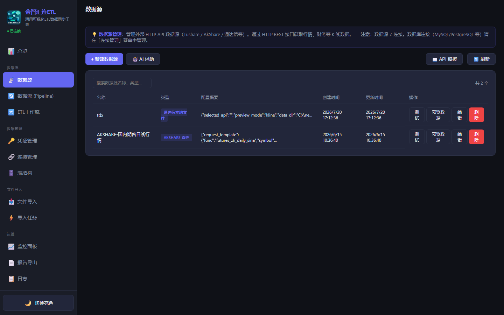
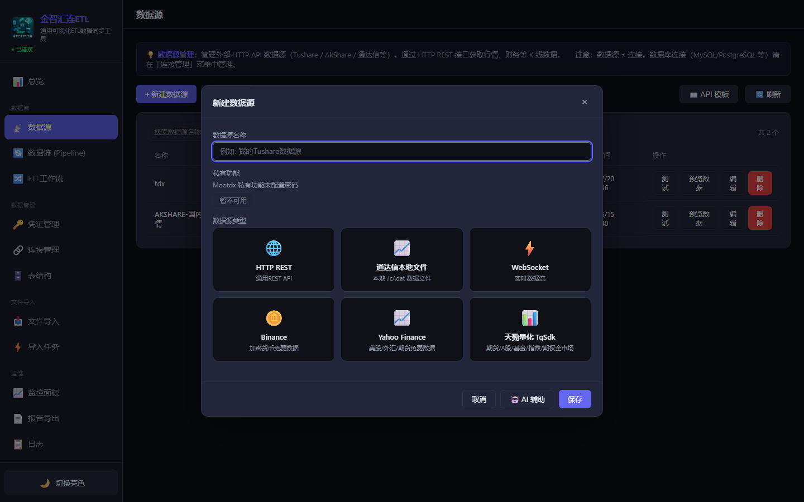
| 字段 | 填写 | 说明 |
|---|---|---|
| 名称 | 如 平安银行日K | 自己能认出来 |
| 类型 | AkShare | 在线免费接口 |
| request_template | stock_zh_a_hist | A 股日 K 线模板 |
| 股票代码 | 000001 | 6 位股票代码 |
- 点 测试 → 看到 ✅ 表示数据源可用
- 点 预览 → 看到 K 线样例数据（datetime / open / high / low / close / volume）
❓ AkShare 拉不到数据 / 报错？
- 网络问题：AkShare 需要联网。检查代理设置，或关闭 VPN 试试
- 股票代码错：A 股代码是 6 位数字，如
000001（平安银行）、600519（茅台） - 接口变更：AkShare 接口偶尔更新，可以访问 akshare.akfamily.xyz 查最新文档
❓ 我用 TDX 通达信，数据目录怎么填？
TDX 数据目录是通达信客户端安装目录下的 vipdoc 文件夹，通常类似：
D:/new_tdx64/vipdoc ← 默认安装
D:/tdx/vipdoc ← 你自定义的路径如果找不到，在通达信客户端里「系统工具」→「数据管理」可以看到安装路径。
搭建工作流（数据怎么加工）
工作流是「加工流水线」：把多个处理节点串起来，数据依次经过每个节点被清洗、转换、计算。
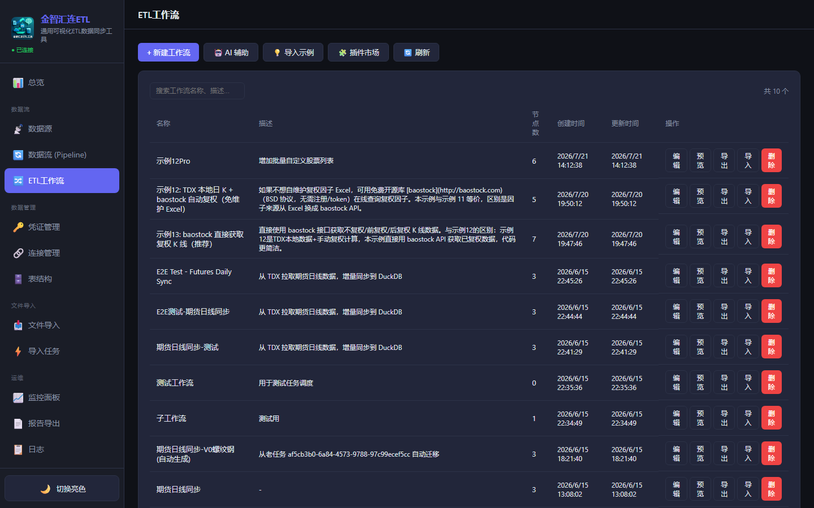
方式 A：直接用预制示例（新手推荐 ⭐）
系统内置了 13+ 个示例工作流，覆盖常见场景，一键导入就能用。
在工作流页面找到「导入示例」按钮，勾选需要的示例，点「导入选中」即可。
方式 B：自己搭建（进阶）
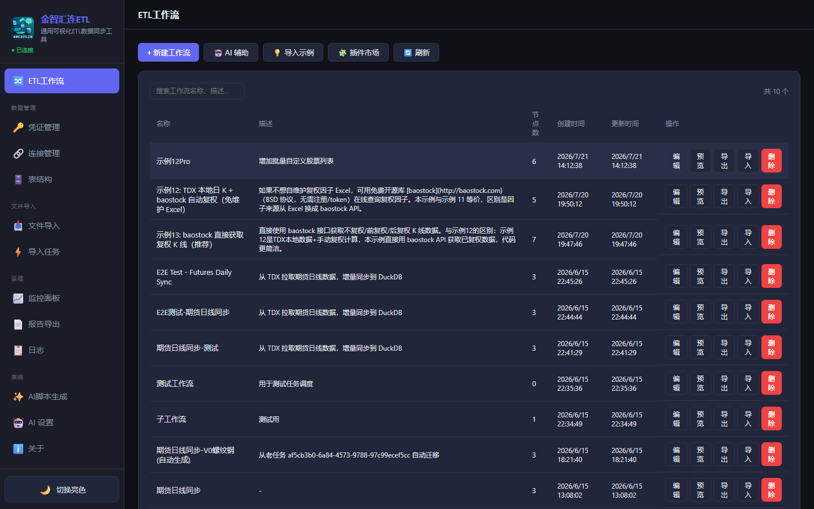
常用节点：
| 节点 | 用途 | 示例 |
|---|---|---|
| source_fetch | 从数据源拉数据 | 拉 TDX / AkShare / Binance |
| filter | 按条件过滤行 | 去掉成交量=0 的行 |
| resample | 周期转换 | 1 分钟线 → 30 分钟线 |
| ma | 移动均线 | 计算 MA5 / MA10 / MA20 |
| macd / rsi / boll | 技术指标 | MACD、RSI、布林带 |
| expression | 自定义表达式 | 计算涨跌幅 = (close-open)/open*100 |
| custom_python | Python 脚本 | 复杂自定义逻辑 |
| target_write | 写入目标 | 写 DuckDB / SQLite / CSV |
从一个节点的输出端口拖到下一个节点的输入端口，形成数据流向。例如：
source_fetch → filter → ma → target_write点击节点，在右侧面板配置参数。每个节点都有参数提示，鼠标悬停可看说明。
❓ 节点运行报错「列不存在」？
最常见原因：上游节点的输出列名变了，但你配的列名没跟着改。
解决：
- 点上游节点 → 预览输出，看实际列名
- 不同数据源的列名可能不同（如
volvsvolume），用column_rename节点统一改名
创建数据流 Pipeline（完整编排）
Pipeline 是最终的「生产订单」，把「数据源 + 工作流 + 目标连接」绑成一条完整的 ETL 流水线。
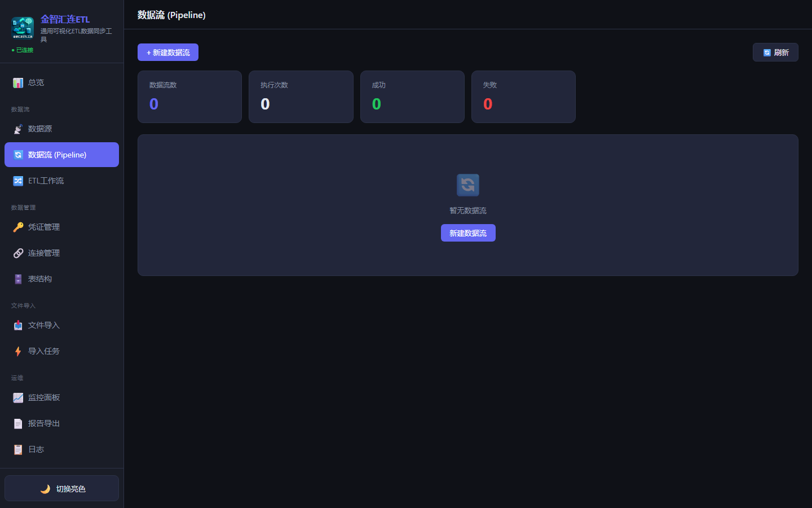
点击 + 新建数据流，填写：
| 字段 | 说明 |
|---|---|
| 名称 | 如「平安银行日K加工」 |
| 数据源 | 选刚才创建的数据源 |
| 工作流 | 选刚才导入的工作流 |
| 目标连接 | 选刚才创建的 DuckDB 连接 |
| 目标表名 | 如 stock_kline，表不存在会自动创建 |
如果数据源输出的列名和目标表的列名不一致，需要配置字段映射。一般工作流内已处理，可跳过。
- 预检查：校验所有配置是否正确
- 预览：看加工后的数据长啥样（不真正写入）
- 执行：真正跑 + 写入数据库
运行与监控
单次运行
在 Pipeline 列表点「执行」即可。执行是异步的，不会卡住界面。
查看执行记录
在 Pipeline 详情页下方，会列出所有执行记录：
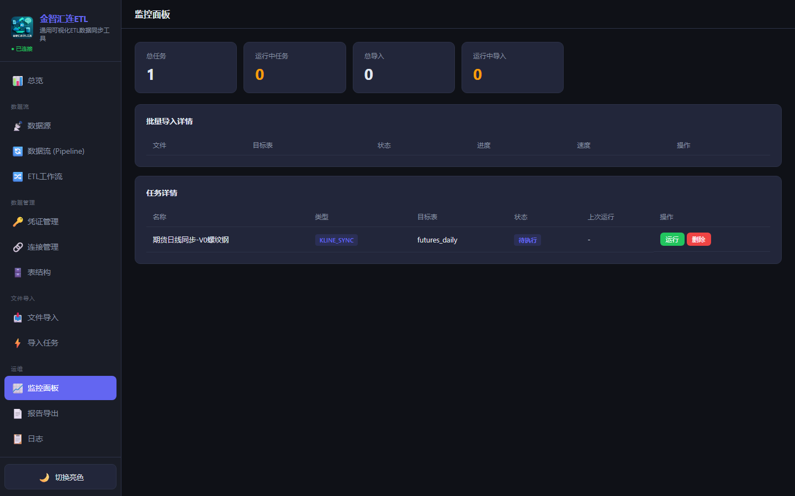
| 状态 | 含义 | 怎么办 |
|---|---|---|
| ✅ success | 执行成功 | 恭喜！数据已落库 |
| ❌ error | 执行失败 | 点开查看错误详情，对照 FAQ 排查 |
| ⏳ running | 正在运行 | 等几分钟再刷新 |
| ⏸ queued | 排队中 | 前面的任务跑完才会轮到 |
查看落库结果
回到「连接管理」→ 找你的 DuckDB 连接 → 点「查看表」→ 选表 → 「查看数据」。
文件导入（CSV / Excel）
如果你有本地的 CSV / Excel 数据想导入数据库，用「文件导入」功能最方便。
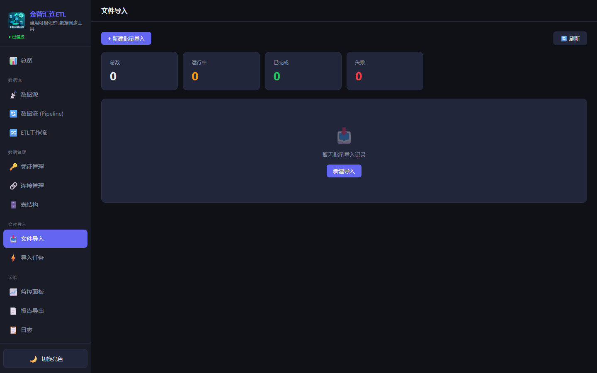
点「新建导入」，选择：
- 文件：支持多选（按住 Ctrl）
- 目标连接：选 DuckDB 连接
- 目标表名：默认用文件名，可改
系统会自动识别文件表头。如有需要，可以手动调整字段名 / 类型。
点「执行」开始导入。进度会实时显示。
表结构 DDL
如果你想精细控制目标表的字段名 / 类型 / 索引，可以预先定义「表结构」并应用到数据库。
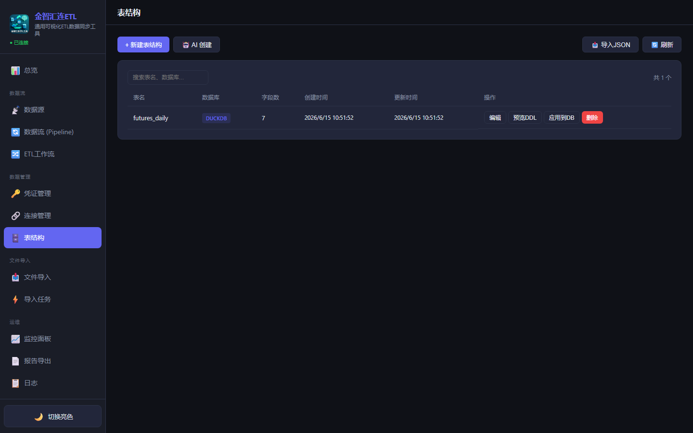
一般流程：
- 新建表结构 → 添加字段（名字、类型、是否可空）
- 添加索引（加速查询）
- 点「预览 DDL」看生成的 SQL
- 点「应用到数据库」选目标连接，表就在数据库里建好了
AI 脚本生成
不想手动搭建工作流？直接用自然语言告诉 AI 你要什么，它帮你生成 Python 脚本。
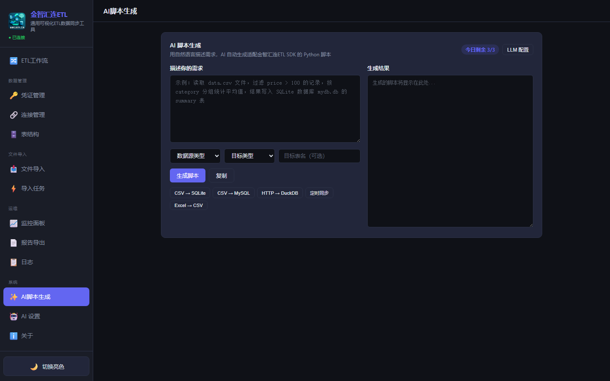
例如：
拉取平安银行(000001)近1年的日K线数据，计算5日和20日均线，写入DuckDBAI 会生成完整的 Python 脚本，可直接复制运行。
配置本地 LLM（可选）
如果担心数据隐私，可以用本地 Ollama 模型：
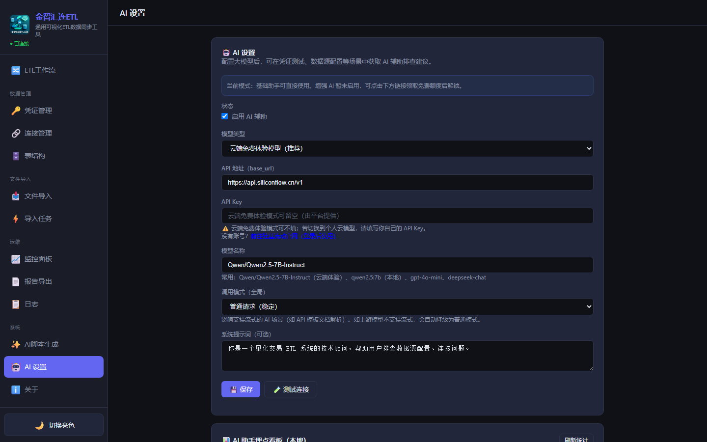
本地模型需要在电脑上先安装 Ollama 并下载模型。
预制示例（强烈推荐先看）
系统内置 25 个覆盖常见场景的工作流示例，位于「ETL 工作流」页面的「📥 导入示例」按钮：
| 示例 | 学什么 |
|---|---|
| 1. 数据源拉取 → 写入 DuckDB | 最简 ETL 流程 ⭐ 新手必看 |
| 2. Binance + 重采样 + MACD | 加密货币 + 周期转换 + 技术指标 |
| 3. Yahoo Finance + 多指标 | MA + RSI + BOLL 多指标组合 |
| 4. 表达式 + 条件 + 自定义脚本 | 流程控制 + 自定义 Python |
| 5. 过滤 + 排序 + 分组聚合 | 数据处理基础三件套 |
| 11~13. 复权处理 | 前复权 / 后复权 / baostock 自动复权 |
| 23. 嵌套循环 + 分片处理 | 表 × 股票 双层 for_each，大数据友好 |
| 24. 循环遍历 for_each | 遍历股票代码批量处理 ⭐ 循环入门 |
| 25. 条件循环 loop | 分页拉取直到没有下一页 ⭐ while 语义 |
流程控制节点（循环 / 变量 / 延时）
传统数据处理节点（source_fetch / target_write / filter 等）专注「数据怎么加工」，但缺少「流程怎么编排」的能力。当需要处理多张表、多只股票、分批拉取数据时，流程控制节点就是你的选择。
set_variable 存中间状态 · wait 延时等待 · for_each 遍历列表 · loop 条件循环对应示例：#23 嵌套循环 / #24 循环遍历 / #25 条件循环（在「ETL 工作流」页的「📥 导入示例」里）
速查表
| 节点 | 语义 | 退出依据 | 典型场景 |
|---|---|---|---|
set_variable |
把值写入全局 context | — | 保存表名列表、累加行数、存分页状态 |
wait |
暂停指定秒数 | — | API 限流、等待外部资源、避免 CPU 过载 |
for_each |
for 循环（遍历列表） | 列表遍历完 | 遍历股票代码 / 表名列表 / 文件路径 |
loop |
while 循环（条件判断） | 条件返回 False | 分页拉取 / 重试直到成功 / 迭代收敛 |
🔑 核心概念：工作流全局 context
context 是一个 Python dict，贯穿整个工作流执行过程。所有节点共享同一个 context，这是循环节点传递状态的关键。
set_variable把值写入 context；for_each每轮迭代自动把当前项写入 context- 下游节点通过
context.get("变量名")读取 - 以
__开头的变量是引擎保留的（如__workflow_json__、__current_node_id__），不要覆盖
custom_python 节点的脚本能直接通过 context.get(...) 读取变量。其他节点（source_fetch / target_write / db_query 等）的参数是字面值，不支持 {{变量}} 模板替换。所以循环节点通常要和 custom_python 搭配使用。
📋 set_variable — 变量赋值
| 参数 | 类型 | 说明 | 示例 |
|---|---|---|---|
var_name | text | 变量名 | tables、page、total_rows |
var_value | textarea | 变量值 | 根据 value_type 填写 |
value_type | select | 值类型 |
string 字符串 · number 数字 · json JSON 数组/对象 · expression Python 表达式（可引用 context）
|
常见用法：
- 初始化列表：
value_type=json，var_value=["a","b","c"]，给 for_each 用 - 累加计数器：
value_type=expression，var_value=context.get('total_rows', 0) + len(df) - 初始化分页状态：
var_name=has_more，var_value=true，value_type=json
⏱️ wait — 等待延时
| 参数 | 类型 | 说明 | 默认值 |
|---|---|---|---|
seconds | number | 等待秒数（支持小数） | 1 |
mode | select | delay 固定延时 / until_timestamp 等到指定时间 | delay |
常用于循环体内做 API 限流，比如 seconds=0.1 表示每次请求间隔 100ms。
🔁 for_each — 循环遍历（for 循环）
对列表逐项执行下游节点链。迭代次数 = 列表长度，事先确定。
| 参数 | 类型 | 说明 | 默认值 |
|---|---|---|---|
items | textarea | 循环列表，三种写法： |
① JSON 数组 ["a","b"]② 逗号分隔 a, b, c③ context 引用 {{var_name}}
|
item_var | text | 当前项变量名，注入到 context | current_item |
index_var | text | 当前索引变量名（从 0 开始） | item_index |
max_iterations | number | 安全阀，超过强制截断 | 1000 |
工作流程：
- 解析 items 列表
- 对每项：把当前项写入
context[item_var]，把索引写入context[index_var] - BFS 找出当前节点的所有下游节点，组成子图，递归执行
- 把所有迭代的输出 DataFrame 用
pd.concat合并返回
🔄 loop — 条件循环（while 循环）
在每轮迭代开始前求值 Python 表达式，为 True 就继续执行子图，为 False 就退出。迭代次数事先不确定。
| 参数 | 类型 | 说明 | 默认值 |
|---|---|---|---|
condition | text | Python 表达式，必须返回 True/False。可引用 context、len()、int()、float() |
context.get('counter', 0) < 10 |
max_iterations | number | 安全阀，强制退出 | 100 |
求值时机：每轮迭代开始前求值。子图内的 custom_python 修改 context 后，下一轮条件求值就能看到新值。
⚔️ for_each vs loop — 怎么选？
| 维度 | for_each | loop |
|---|---|---|
| 循环语义 | for ... in ... | while ... |
| 迭代次数 | = 列表长度（事先确定） | 条件判断（事先不一定知道） |
| 输入 | 一个列表（JSON / 逗号 / context 变量） | 一个 Python 布尔表达式 |
| 状态更新 | 自动注入 current_item / index | 需要自己在子图里用 set_variable / custom_python 修改 context |
| 典型场景 | 遍历股票 / 表 / 文件列表 | 分页 / 重试 / 迭代收敛 |
🕳️ 常见坑 & 最佳实践
| 坑 | 说明 | 应对 |
|---|---|---|
| 下游子图被循环"包住" | for_each / loop 都会 BFS 取出它之后的所有下游节点作为循环体，不仅仅是直接相连的那个 | 把循环体画在下游，不要和循环外的节点混在一起；需要分叉时用 custom_python 内部判断 |
| context 变量是共享的 | 嵌套 for_each 时，内层循环会覆盖外层的 current_item | 给每层循环起不同的 item_var，比如 current_table / current_code |
| 死循环风险 | loop 条件永远为 True（比如忘记在 custom_python 里改 has_more） | 一定要填 max_iterations；在 custom_python 里显式写退出条件 |
| 内存爆炸 | for_each / loop 会把每轮迭代的输出 DataFrame 攒起来最后 concat | 单项输出不要太大；在循环体内用 target_write 写库，而不是返回大 DataFrame |
| 错误静默跳过 | 某一项执行失败时，循环会跳过该项继续下一项 | 在 custom_python 内部 try/except，把错误信息记录到输出 DataFrame 里便于排查 |
| condition 表达式语法 | 只能用表达式，不能用 print / import 等语句 | 需要复杂逻辑时，用 custom_python 节点算好后存到 context，condition 里只读结果 |
💡 推荐学习路径
- 先导入示例 24（for_each），跑通最简单的单层循环，观察 context 如何注入
- 再导入示例 25（loop），理解"条件 + 状态修改"的配合
- 最后挑战示例 23（嵌套循环），看两层 for_each 怎么配合处理 7 张表 × 几千只股票
因子库简介
因子库是 ETL 的数据基座功能，用于标准化生产、存储、查询量化因子数据。
核心能力
| 能力 | 说明 |
|---|---|
| 📊 9 种因子计算 | MA / EMA / MACD / RSI / BOLL / 收益率 / 波动率 / ATR / BIAS |
| 💾 DuckDB 宽表存储 | 每个因子一张表 factor_{id}，高性能查询 |
| 🔌 标准化 API | 单因子 / 多因子 JOIN / 统计信息查询 |
| 🔄 增量更新 | upsert 模式，高效增量生产 |
因子分类体系
| 层级 | 说明 | 示例 | 生产方 |
|---|---|---|---|
| L0 | 原始因子 | close, vol, amount | 数据源直接拉取 |
| L1 | 基础因子 | adj_fore, adj_back | 交易所数据 |
| L2 | 衍生因子 | ma_5, macd, rsi_14 | 本系统生产 |
| L3 | 统计因子 | ret_1d, volatility_20 | 本系统生产 |
| L4 | 复合因子 | momentum_score | 金策智算侧 |
管理页面
打开浏览器访问：因子库管理页面
支持：查看因子列表、查看因子详情、删除因子、查看统计信息。
因子计算节点
factor_compute 节点用于根据输入数据计算指定类型的因子。
参数说明
| 参数 | 类型 | 默认值 | 说明 |
|---|---|---|---|
factor_id | text | ma_5 | 因子 ID，用于标识因子 |
compute_type | select | ma | 计算类型（见下表） |
params_json | text | {"window": 5} | 计算参数 JSON |
source_column | text | close | 源数据字段名 |
code_column | text | code | 股票代码字段名 |
date_column | text | dt | 日期字段名 |
支持的计算类型
| 类型 | 名称 | 参数示例 |
|---|---|---|
ma | 移动平均 | {"window": 5} |
ema | 指数移动平均 | {"span": 10} |
macd | MACD 指标 | {"fast": 12, "slow": 26, "signal": 9} |
rsi | RSI 相对强弱 | {"window": 14} |
boll | 布林带 | {"window": 20, "std_mult": 2} |
return | 收益率 | {"window": 1} |
volatility | 年化波动率 | {"window": 20} |
atr | ATR 真实波幅 | {"window": 14} |
bias | BIAS 乖离率 | {"window": 6} |
输出格式
节点输出统一为三列：
| 列名 | 类型 | 说明 |
|---|---|---|
code | string | 股票代码 |
dt | string | 日期 |
factor_value | float | 因子值 |
_factor_* 辅助列（如 _factor_dif、_factor_dea）。
因子表达式节点
factor_expression 节点允许你用一行表达式灵活定义因子，无需写 Python 脚本。灵感来自 Qlib 的表达式引擎。
factor_compute 的枚举列表里，又不想写完整的 Python 脚本时，用这个节点最方便。
操作步骤
拖拽 「因子表达式」 节点到画布。
从 source_fetch 或数据处理节点的输出端口，拖线到因子表达式节点的输入端口。
例如输入：
MA($close, 20) / STD($close, 20)这就是一个「波动率调整收益」因子。
因子表达式的输出格式与 factor_write 完全兼容（code / dt / factor_value），直接拖线过去即可入库。
DSL 语法说明
变量（字段引用）
用 $ 前缀引用 DataFrame 中的列：
$close $open $high $low $vol $volume $amount也可以不带 $ 直接写字段名（如 close），效果相同。
支持的函数
| 函数 | 含义 | 示例 |
|---|---|---|
MA(s, n) | 简单移动平均 | MA($close, 20) |
EMA(s, n) | 指数移动平均 | EMA($close, 12) |
STD(s, n) | 滚动标准差 | STD($close, 20) |
VAR(s, n) | 滚动方差 | VAR($close, 20) |
SUM(s, n) | 滚动求和 | SUM($vol, 5) |
MIN(s, n) | 滚动最小值 | MIN($low, 10) |
MAX(s, n) | 滚动最大值 | MAX($high, 10) |
REF(s, n) | 历史引用（lag） | REF($close, 1) = 昨日收盘 |
RSI(s, n) | 相对强弱指标 | RSI($close, 14) |
ATR(n) | 真实波幅（需 high/low/close） | ATR(14) |
SLOPE(s, n) | 滚动线性回归斜率 | SLOPE($close, 20) |
CORR(s1, s2, n) | 滚动相关系数 | CORR($close, $vol, 20) |
COUNT(cond, n) | 滚动条件计数 | COUNT($close > MA($close,20), 10) |
IF(cond, a, b) | 元素条件判断 | IF($close > $open, 1, 0) |
数学函数：ABS LOG SQRT POW SIGN CEIL FLOOR ROUND
运算符
| 类型 | 运算符 | 示例 |
|---|---|---|
| 算术 | + - * / ^ % | ($close - $open) / $open |
| 比较 | > < >= <= == != | $close > MA($close, 20) |
| 逻辑 | && || ! | $close > $open && $vol > 1000 |
注：^ 表示幂运算（即 Python 的 **），不是异或。
常用因子表达式示例
| 因子名称 | 表达式 | 含义 |
|---|---|---|
| 60 日动量 | REF($close, 60) / $close - 1 | 60 个交易日收益率 |
| 波动率调整收益 | ($close - REF($close, 20)) / STD($close, 20) | 收益 / 波动率 |
| MACD 变种 | EMA($close, 12) - EMA($close, 26) | 快慢均线差 |
| 金叉信号 | IF(MA($close,5) > MA($close,20) && REF(MA($close,5),1) <= REF(MA($close,20),1), 1, 0) | MA5 上穿 MA20 |
| BIAS 乖离率 | ($close - MA($close, 6)) / MA($close, 6) * 100 | 价格偏离均线程度 |
| 量价相关性 | CORR($close, $vol, 20) | 20 日量价相关系数 |
| 连涨天数 | COUNT($close > REF($close, 1), 10) | 近 10 日上涨天数 |
参数说明
| 参数 | 类型 | 默认值 | 说明 |
|---|---|---|---|
expression | textarea | MA($close, 20) / STD($close, 20) | 因子表达式 |
output_column | text | factor_value | 输出列名（保持默认即可） |
code_column | text | code | 股票代码字段名（留空则整表计算） |
date_column | text | dt | 日期字段名 |
factor_compute：下拉选类型，适合常见因子，操作简单factor_expression：手写表达式，可以任意组合函数，适合自定义因子
- 字段名不存在：错误信息会列出可用列名，检查你的数据源输出
- 函数名拼写错误：函数名区分大小写，必须全大写（如
MA不是ma） - 窗口期不足：如
MA($close, 20)前 19 行会是 NaN，这是正常的
写入因子库节点
factor_write 节点用于将因子数据写入 DuckDB 因子库。
参数说明
| 参数 | 类型 | 默认值 | 说明 |
|---|---|---|---|
factor_id | text | （必填） | 因子 ID，如 ma_5 |
db_path | text | D:/data/factor_data.duckdb | DuckDB 文件路径 |
write_mode | select | upsert | 写入模式：upsert / append / replace |
register_meta | checkbox | true | 是否注册因子元数据 |
写入模式
| 模式 | SQL 行为 | 适用场景 |
|---|---|---|
upsert | INSERT OR REPLACE | 增量更新（默认推荐） |
append | INSERT | 确保无重复的新数据 |
replace | DELETE + INSERT | 全量重算 |
存储结构
每个因子一张宽表，表名 factor_{factor_id}：
CREATE TABLE factor_ma_5 (
code VARCHAR,
dt VARCHAR,
factor_value DOUBLE,
created_at TIMESTAMP DEFAULT CURRENT_TIMESTAMP,
PRIMARY KEY (code, dt)
);register_meta = true 时，会自动在 factor_registry 表中注册因子元数据（名称、类型、参数等）。
因子查询 API
提供 6 个 API 端点供上游系统消费因子数据。
| 端点 | 方法 | 说明 |
|---|---|---|
/api/factors/registry | GET | 列出所有已注册因子 |
/api/factors/query | GET | 查询单因子数据 |
/api/factors/query/multi | GET | 多因子 JOIN 查询（宽表输出） |
/api/factors/stats | GET | 因子库统计信息 |
/api/factors/codes | GET | 查询因子包含的股票列表 |
/api/factors/delete | DELETE | 删除指定因子 |
单因子查询示例
GET /api/factors/query?factor_id=ma_5&codes=000001,600000&start_date=2024-01-01&end_date=2024-12-31&limit=1000
响应：
{
"success": true,
"factor_id": "ma_5",
"total": 250,
"data": [
{"code": "000001", "dt": "2024-01-02", "factor_value": 10.23},
{"code": "000001", "dt": "2024-01-03", "factor_value": 10.35}
]
}多因子 JOIN 查询示例
GET /api/factors/query/multi?factor_ids=ma_5,ma_20,rsi_14&codes=000001&start_date=2024-01-01
响应（宽表格式）：
{
"success": true,
"data": [
{"code": "000001", "dt": "2024-01-02", "ma_5": 10.23, "ma_20": 10.15, "rsi_14": 55.2}
]
}增量更新策略
因子库支持高效的增量更新，避免全量重算的耗时和资源浪费。
增量更新原理
- 查询最新日期：从因子库查询当前最新日期
MAX(dt) - 拉取源数据（带回看）：从
MAX(dt) - lookback + 1开始拉取 - 计算因子：包含回看数据，确保边界值正确
- 过滤 + 写入：只写入
dt > MAX(dt)的新数据，使用 upsert 模式
回看窗口对照表
| 因子类型 | 参数 | 回看窗口 |
|---|---|---|
ma | window=5 | 4 天 |
ema | span=10 | 9 天 |
macd | slow=26 | 25 天 |
rsi | window=14 | 14 天 |
boll | window=20 | 19 天 |
return | window=N | N 天 |
volatility | window=20 | 20 天 |
atr | window=14 | 14 天 |
bias | window=6 | 6 天 |
简单增量工作流
使用固定回看天数（如 30 天），配合 upsert 模式自动去重：
source_fetch(lookback_days=30) → factor_compute(ma_20) → factor_write(upsert)详见示例 14-16。
上游消费方式
金策智算等上游系统可以通过两种方式消费因子数据。
方式一：HTTP API（跨语言）
import requests
BASE_URL = "http://localhost:8000"
# 单因子查询
resp = requests.get(f"{BASE_URL}/api/factors/query", params={
"factor_id": "ma_5",
"codes": "000001,600000",
"start_date": "2024-01-01",
})
data = resp.json()["data"]
# 多因子 JOIN 查询
resp = requests.get(f"{BASE_URL}/api/factors/query/multi", params={
"factor_ids": "ma_5,ma_20,rsi_14",
"codes": "000001",
})
df_wide = pd.DataFrame(resp.json()["data"])方式二：DuckDB 直连（推荐，性能更好）
import duckdb
conn = duckdb.connect("D:/data/factor_data.duckdb", read_only=True)
# 单因子查询
df = conn.execute("""
SELECT * FROM factor_ma_5
WHERE code = '000001' AND dt >= '2024-01-01'
ORDER BY dt
""").fetchdf()
# 多因子 JOIN（宽表输出）
df_wide = conn.execute("""
SELECT t0.code, t0.dt,
t0.factor_value as ma_5,
t1.factor_value as ma_20,
t2.factor_value as rsi_14
FROM factor_ma_5 t0
JOIN factor_ma_20 t1 ON t0.code = t1.code AND t0.dt = t1.dt
JOIN factor_rsi_14 t2 ON t0.code = t2.code AND t0.dt = t2.dt
WHERE t0.code IN ('000001', '600000')
ORDER BY t0.code, t0.dt
""").fetchdf()
conn.close()常见问题 FAQ
❓ 启动时提示「Python 未找到」/「python 不是内部命令」
❓ pip install 失败 / 网络超时
国内网络问题。改用国内镜像源：
venv\Scripts\pip.exe install -r requirements.txt -i https://pypi.tuna.tsinghua.edu.cn/simple或在 start.bat 里加 --trusted-host pypi.tuna.tsinghua.edu.cn。
❓ 端口 8080 被占用
两种解法：
- 关掉占用程序：PowerShell 运行
netstat -ano | findstr :8080找到 PID，再taskkill /PID xxx - 改用其他端口：编辑
backend/run_server.py，把port=8080改成port=9090
❓ Pipeline 执行报错「连接失败」/「数据源不可用」
- 回到「连接管理」/「数据源」页面，点「测试」确认能用
- 如果是 AkShare/Binance，检查网络
- 如果是 TDX，检查数据目录路径是否正确、文件是否存在
❓ Pipeline 跑了但写入 0 行
常见原因：
- 数据源本身没数据：回看时间范围设太长/太短、股票代码错
- 工作流 filter 把数据都过滤掉了：检查 filter 条件
- 重复策略选了「忽略」+ 数据已存在：去目标表看是否已有数据
先点「预览」看加工后数据是否为空，定位是哪一步丢的。
❓ 执行报「模块未安装」/ 「ImportError: No module named xxx」
工作流中用了 custom_python 节点，且脚本 import 了额外库（如 baostock、tushare）。
解决：
backend\venv\Scripts\pip.exe install baostock注意要装到项目的 venv 里，不是系统 Python。
❓ 浏览器访问 Dashboard 显示空白 / 404
- 硬刷新：按
Ctrl + F5 - 清缓存：F12 → Network → 勾选 "Disable cache" → 刷新
- 检查地址：必须是
http://127.0.0.1:8080，不是 https，也不是 localhost:8080（某些环境 localhost 解析有问题）
❓ 怎么卸载 / 重置系统
删除整个项目目录即可。所有数据都在：
backend/etl.db- 主数据库（连接/工作流/Pipeline 配置）D:/data/*.db- 你创建的 DuckDB 数据文件
想「干净重启」只保留代码：删掉上面的 .db 文件，重启后重新配置。
❓ 数据源拉取很慢 / 超时
- AkShare / Binance / YFinance：受网络和对方服务器影响。拉长历史数据时，建议分批（每次 1 年内）
- 并行拉取多股票：工作流里
source_fetch节点勾选「并行」+ 设置max_workers - TDX 本地数据：通常很快，如果慢可能是磁盘性能问题
❓ 想定时自动运行 Pipeline
在 Pipeline 配置里填 cron 表达式：
| 需求 | cron 表达式 |
|---|---|
| 每天 15:30 跑一次 | 30 15 * * * |
| 每小时整点 | 0 * * * * |
| 每周一 9:00 | 0 9 * * 1 |
| 每 5 分钟 | */5 * * * * |
注意：应用必须保持运行，定时任务才会触发。
1) 报错截图 2) F12 Console 的错误信息 3) 你的操作步骤
这样能更快得到解答。
术语表
| 术语 | 英文 | 解释 |
|---|---|---|
| ETL | Extract-Transform-Load | 数据抽取→转换→加载的完整流程 |
| Pipeline | - | 数据流，把多个步骤串成一条流水线 |
| 节点 | Node | 工作流里的单个处理步骤（如 filter、ma、target_write） |
| DuckDB | - | 轻量级列存数据库，单文件，适合本地分析 |
| K 线 | Candlestick / OHLC | 股票/期货的价格数据格式，包含开高低收 + 成交量 |
| 复权 | Adjusted | 除权除息后调整价格，分前复权、后复权两种 |
| Cron | - | 定时任务表达式，用于周期性自动执行 |
金智汇连 ETL · 操作手册 v1.1 · 更新日期 2026-07-22
如有问题或建议，欢迎到 GitHub 提 Issue ❤️